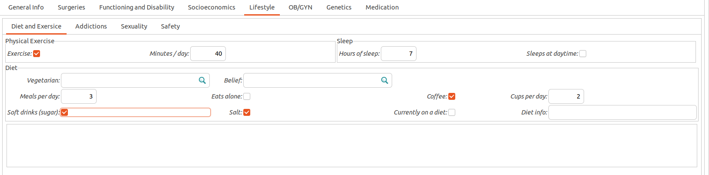
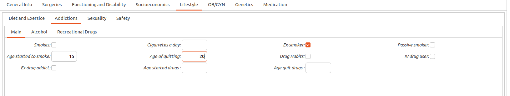
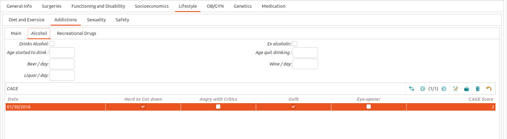
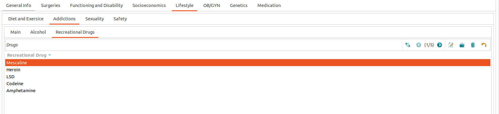
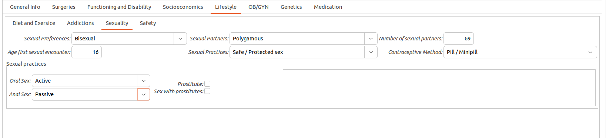
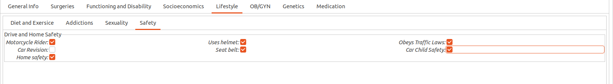

Lifestyle
Introduction to Lifestyle
Individuals health depends a lot on their lifestyle. Maintaining physical and mental health are crucial to an individuals longevity. The more time spent on hygiene, physical fitness, and diet regulation, the healthier lifestyle they have. Mental illness may occur through various variables. For example, depression may promote mental illness through stress and anxiety. Reasons for being depressed can be due to a number of things including job loss, recently widowed, divorce, etc. Depression may lead to or increase the frequency of poor habits not promoting physical health. Poor habits may eventually lead to a poor even dangerous lifestyle.
The module health_lifestyle collects the information of the patient’s lifestyle working on various aspects such as diet and exersice, addictions, sexuality and safety.
Diet and Exercise Tab


Proper diet and exercise are the mainstays for a healthy lifestyle. GNU Health includes some features such as Physical Exercise, Sleep and Meals. The information in this menu is supplemented by a free text box where you can add relevant notes of interest.
Addictions Tab


Regarding to addictions there are two tabs, the main one with basic info about smoking and alcoholism and another more specific about Recreational Drugs.


The main menu give us a first glimpse of generally more socially acceptable drugs that gives us valuable information about the patient addictive behavior and therefore its impact on his health.


In the menu of recreational drugs GNU Health has a full list of these classified by different categories and a search engine filters very comfortable and useful.
Sexuality Tab


Sexuality plays a major role in most people’s lives, and encompasses a range of behaviors and meanings that are shaped by individual, social and cultural factors. Promoting sexual well-being, and preventing sexual health problems (such as HIV and other STI’s, sexual violence, unwanted pregnancies, stigmatization and discrimination based on sexual behavior/identity, and violations of sexual and reproductive autonomy) are vital tasks for public health. GNU Health gives importance to factors such as sexual preferences, partners, sexual practices or anticonceptive methods.
Safety Tab


Safety refers to the awareness and education of risks and potential dangers in and around a home which may cause bodily harm, injury, or death to those residing in and around the physical structure of a home. It includes mitigating or preventing the unwanted dangers through testing, research and accepted standards of applications and practices.
The Safety tab covers the basic aspects of drive and home safety through a checklist that evaluates certain behaviors that impact on the risks of accidents. The following is an example where we can see that the pacient is a motorcycle rider that uses helmet and obeys traffic laws. When travelling by car, the patient uses seat belt and take safety measures for children. We can also state that this person takes security measures at home.
Note that the checklist is designed to uncheck the service that is lacking. All services are already tagged for an easier way to complete the list.